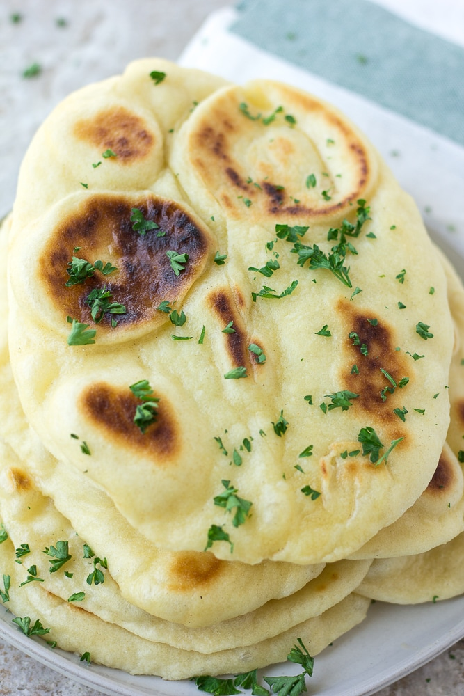

Vegan Naan

The fluffiest vegan naan you will ever have the pleasure of tasting, courtesy of Nora Cooks
Ingredients
For this recipe, you will need:
- 1 teaspoon instant yeast
- 3/4 cup warm water
- 1 teaspoon granulated sugar
- 2 cups all purpose flour, or white whole wheat flour
- 1 teaspoon salt
- 3/4 teaspoon baking powder
- 3 tablespoons coconut cream, *may omit if needed
- 2 tablespoons olive oil
- Optional: melted vegan butter for serving
Steps
- Add the yeast and sugar to a large bowl and pour the warm water on top (think bath temperature, not too hot or it will kill the yeast). Let sit for a few minutes until it is frothy on top.
- Now add the flour, salt, baking powder, coconut cream and olive oil. Stir with a wooden spoon until it becomes difficult, then turn the ball of dough out on a lightly floured surface (I just use my countertop). Knead the ball of dough for about 2-3 minutes, until the ball of dough is smooth and soft. If it is too sticky, add a little more flour.
- Place the dough in a large bowl, cover with a tea towel and let it rise for about 30 minutes. If you are in a hurry, you can skip the rising part. It will still come out quite good!
- After it rises, flatten the dough and divide into 8 pieces.
- Heat a large, heavy bottomed pan (cast iron preferred) over medium heat. Take a piece of the dough and roll it on a lightly floured surface into a circle or oval shape (about 1/4 inch thick). If using garlic, gently press a little minced garlic onto one side so it sticks at this point.
- Place the dough on the heated pan and cook until large bubbles have formed and the bottom is golden brown. Flip and cook 1-2 minutes more until that side is golden brown as well.
- Repeat with the remaining pieces. Cover the naan with a towel or wrapped in foil to keep warm until ready to serve. Serve plain or brush with melted vegan butter and sprinkle with fresh herbs, such as cilantro or parsley.